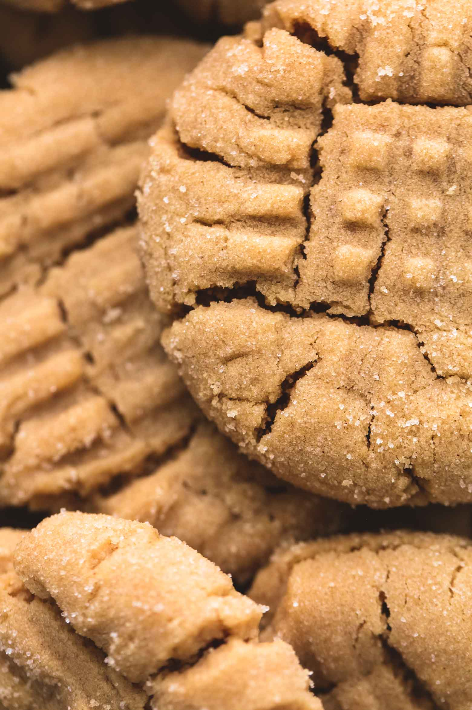
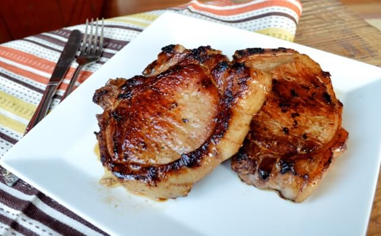

| Ingredients |
Directions |
| 3/4 cup butter |
Preheat the oven to 350 degrees F |
| 1 cup of white sugar |
Mix the butter and sugar until the mix is smooth. |
| 1 egg |
Add the egg and molasses until it is well blended. |
| 1/4 cup of molasses |
Combine the flour, ginger, cinnamon, baking soda and salt. |
| 2 cups of all-purpose flour |
Stir in to form a dough. Roll dough into 1 inch balls, and roll the balls into sugar. |
| 1 tablespoon of ground ginger |
Roll dough into 1 inch balls, and roll the balls into sugar. |
| 1 teaspoon of ground cinnamon |
Place the cookies 2 inches apart on ungreased cookie sheets. |
| 2 teaspoons of baking soda |
Bake for 8 to 10 minutes in the oreheated oven. |
| 1/2 teaspoon of salt |
Allow cookies to for for 5-10 minutes. |
| 1/2 cup of white sugar (for coating the dough in) |
Remove cookies from cooling rack and enjoy! |

| Ingredients |
Directions |
| 1 cup of unsalted butter |
Cream butter, peanut butter, and sugars in a bowl, beat in eggs. |
| 1 cup of peanut butter |
In a seperate bowl, sift flour, baking powder, baking soda, and salt; stir into the butter mixture. |
| 1 cup of white sugar |
Put dough in the refridgerator for 1 hour. |
| 1 cup of brown sugar |
Preheat oven to 375 degrees F while the dough is in the refridgerator. |
| 2 eggs |
Roll dough into 1 inch balls and place them into baking sheets. |
| 2 1/2 cups of all purpose flour |
Flatten each ball with forks in a crisscross pattern. |
| 1 teaspoon of baking powder |
Bake in oven for 10 minutes or until cookies start to brown. |
| 1/2 teaspoon of salt |
| 1 1/2 teaspoons of baking soda |

| Ingredients |
Directions |
| 1 cup of soy sauce |
Place the soy sauce, brown sugar, garlic, ginger, cumin, and chili paste in a large, heavy plastic zipper bag. |
| 1/2 cup of brown sugar |
Smush the bag a few times with your fingers to mix all the ingredients thoroughly and dissolve the brown sugar; place the pork chops into the marinade, and seal the bag. Allow to marinate for 30-45 minutes. |
| 2 cloves of garlic, crushed |
Preheat an outdoor grill for medium heat, and lightly oil the grate. |
| 1 tablespoon of ground ginger |
Remove the pork chops from the marinade, and discard the marinade. |
| 1 tablespoon of ground cumin |
Shake off excess marinade, and grill the pork chops until browned, the meat is no longer pink inside, and the chops show good grill marks, 5 to 7 minutes per side. |
| 1 tablespoon roasted red chili paste |
An instant-read meat thermometer inserted into the thickest part of a chop should read at least 145 degrees F. |
| 6 (1-inch thick) pork chops |
Add a light salt and pepper mix on top of the pork chops. |
| Ingredients |
Directions |
| 1/2 cup butter, softened |
Cream butter and bornw sugar until light and fluffy. |
| 3/4 cup of brown sugar |
Beatin molasses, egg, and water. |
| 1/3 cup of molasses |
In another bowl, whisk together the rest of the ingredidents other than frosting, beat into a creamed mixture. |
| 1 egg |
Divide dough in half and shape both into a disk and cover them. |
| 2 tablespoons water |
Refridgerate until easy to handle, around 30 minutes. |
| 2-2/3 cups all purpose flour |
Preheat oven to 350 degrees F. |
| 1 teaspoon of baking soda |
On a lightly floured surface, roll each portion of dough to 1/8-in. thickness. |
| 1/2 teaspoon salt |
Cut with a floured 4-in. gingerbread man cookie cutter. |
| 2 teaspoons ground ginger |
Place 2 in. apart on greased baking sheets. |
| 1/2 teaspoon ground cinnamon |
Bake until edges are firm, 8-10 minutes. |
| 1/2 teaspoon ground nutmeg |
Remove to wire racks to cool completely. |
| 1/2 teaspoon ground allspice |
Frost as desired. |
| Frosting |
Eat |